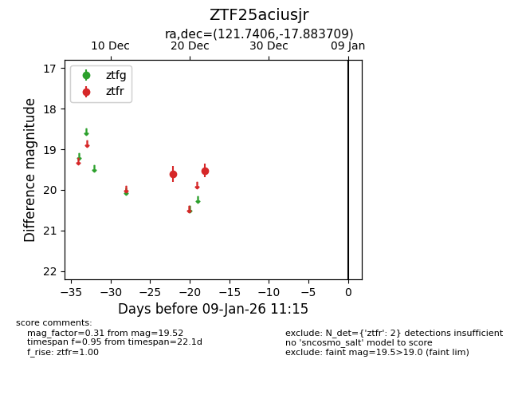
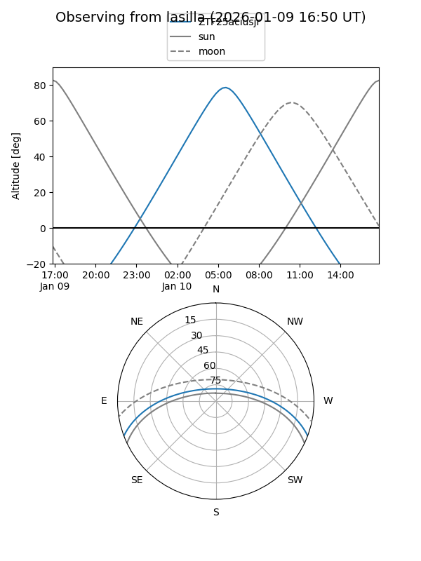
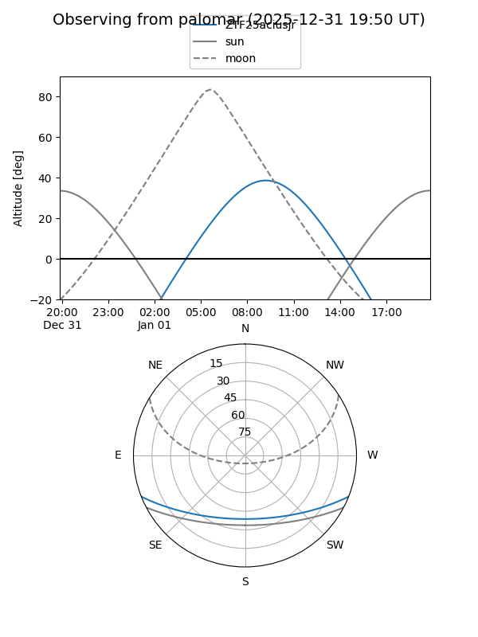

ZTF25aciusjr
Target ZTF25aciusjr at 2025-12-31 18:00
Aliases and brokers:
FINK: link
Lasair: link
ALeRCE: link
alt names
ZTF25aciusjr (ztf,fink_ztf)
Coordinates:
equatorial (ra, dec) = 121.7406,-17.88371
equatorial (HMS+DMS) = 08:06:57.74,-17:53:01.35
galactic (l, b) = (237.6088,+7.70444)
Flags:
Photometry:
last ztfr=19.52
2 ztfr detections
Lightcurve

Visibility


Additional plots